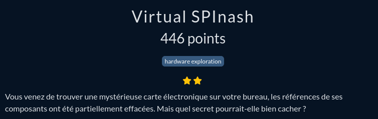
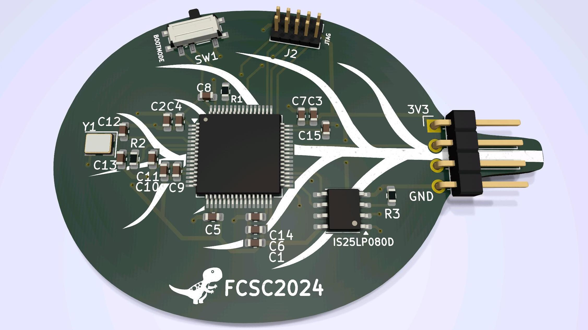
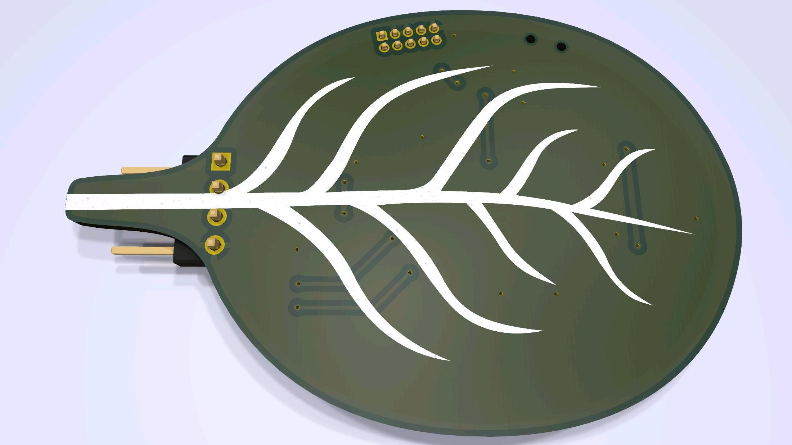
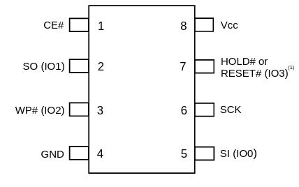
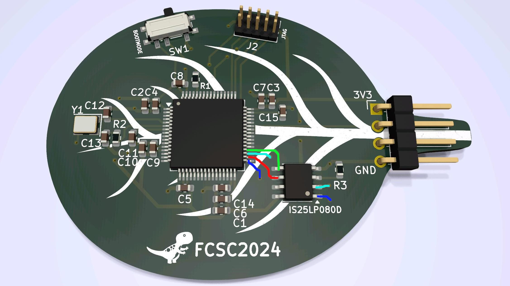
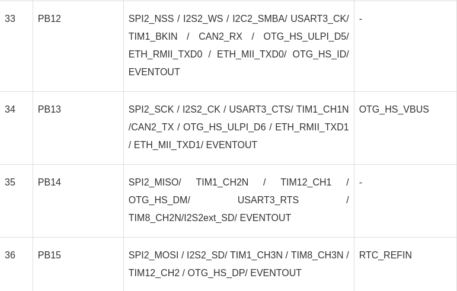

FCSC 2024 Virtual SPInash

Pour résoudre ce challenge, on dispose de 3 éléments :
- deux images, qui correspondent aux 2 faces d'un circuit imprimé
- un accès à un port série virtuelle
On commence par se connecter au port série. On obtient ce résultat :
MicroPython v1.22.2 on 1980-01-01; Mysterious FCSC board with STM32F405RG Type "help()" for more information. >>>
On constate donc qu'on est sur un microcontroleur STM32F405RG qui tourne sous Micropython.
On a aussi les deux images du PCB :


On a deux puces montées en surface, quelque condensateurs, un quartz, un bouton, un port série, et 10 fiches mâles... rien de bien extravagant !!
On a identifié le micro-contrôleur. Pour la deuxième puce, on a une référence IS25LP080D. Après recherche, c'est une mémoire flash qui communique en série.
Première étape, on récupère les Data Sheets pour avoir le pin out de la mémoire :

Voici un tableau qui explique les acronymes :
| PIN | Fonction |
|---|---|
| Vcc | alimentation + |
| GND | alimentation - |
| WP# | protection en écriture |
| SCK | signal d'horloge |
| CE# | chip enable |
| HOLD# | non cabler |
| SO | signal output |
| SI | signal input |
On peut identifier le sens des composants avec la flèche blanche qui pointe la broche 1.
On va maintenant chercher à identifier quelles broches du micro contrôleur sont connectées à quelles broches de la mémoire flash.

Dans la mesure où les pins du micro-contrôleur sont numérotées dans le sens inverse des aiguilles d'une montre, on a les correspondances suivantes :
| PIN mémoire | PIN microcontrôleur |
|---|---|
| SCK | 34 |
| SI/SO | 35/36 |
| CE | 33 |
On va maintenant regarder le PIN out du micro-contrôleur.

On constate que la mémoire est branchée sur l'interface SPI-2. (Serial Peripheral Interface)
On passe maintenant à l'exploitation.
On va écrire un code Python pour lire la mémoire :
from machine import Pin, SPI
spi2 = SPI(2, baudrate=10000000)
cs = Pin("PB12", Pin.OUT)
cs.value(0)
spi2.write(b'\x03') # commande de lecture
spi2.write(bytearray([(0 >> 16) & 0xFF, (0 >> 8) & 0xFF, 0 & 0xFF]))
data = bytearray(1024)
spi2.readinto(data)
print(data)et on obtient le flag qui est donc :
FCSC{a8937c95944625276140d65539299e81e179ec2293417010817a7a595fca987f}